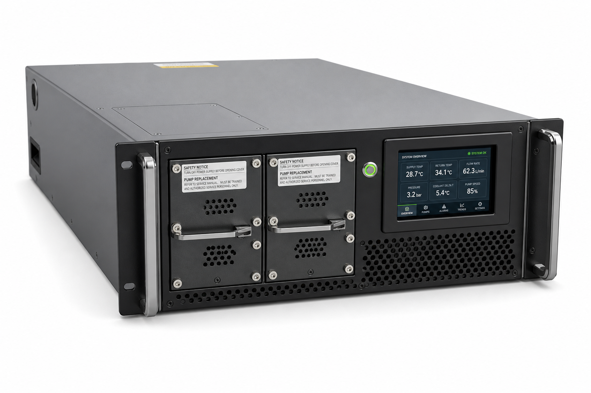
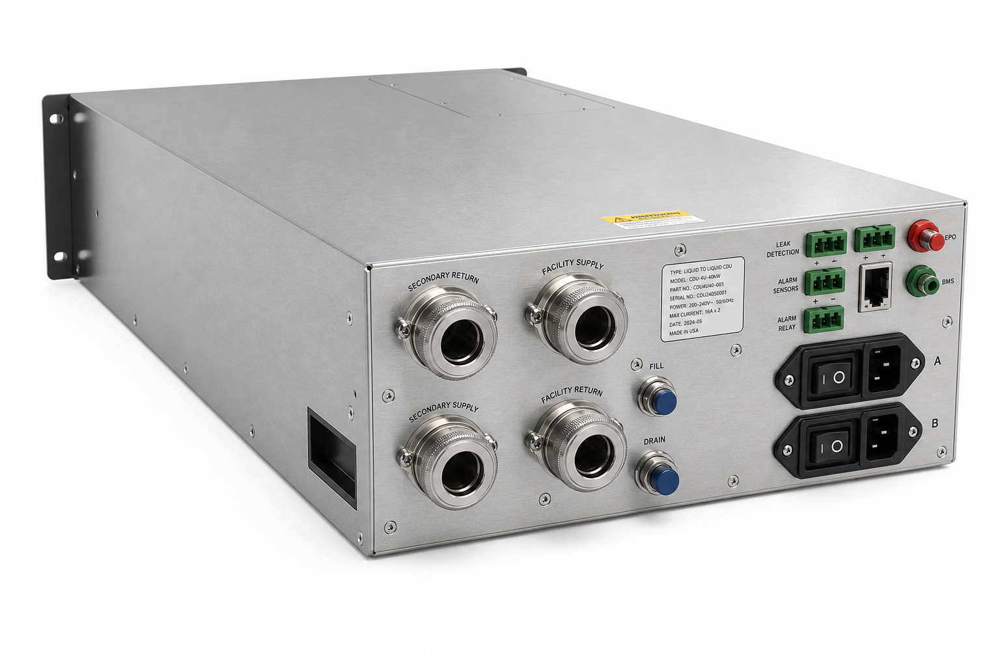
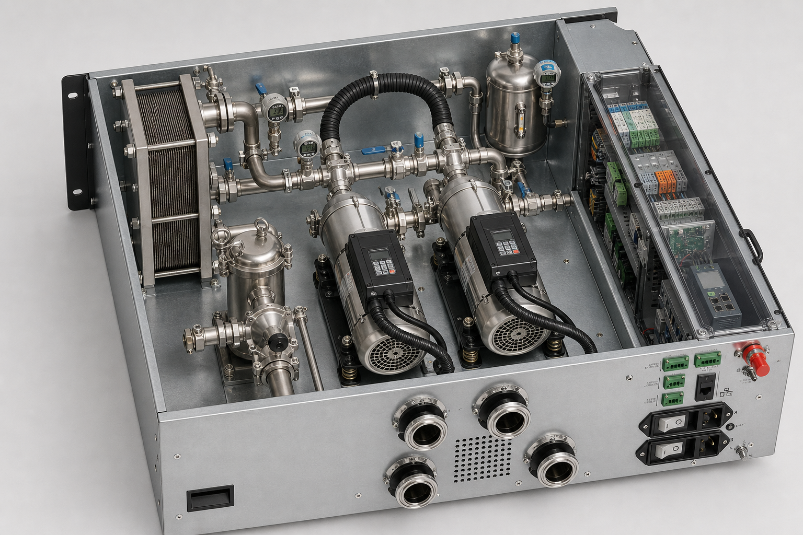
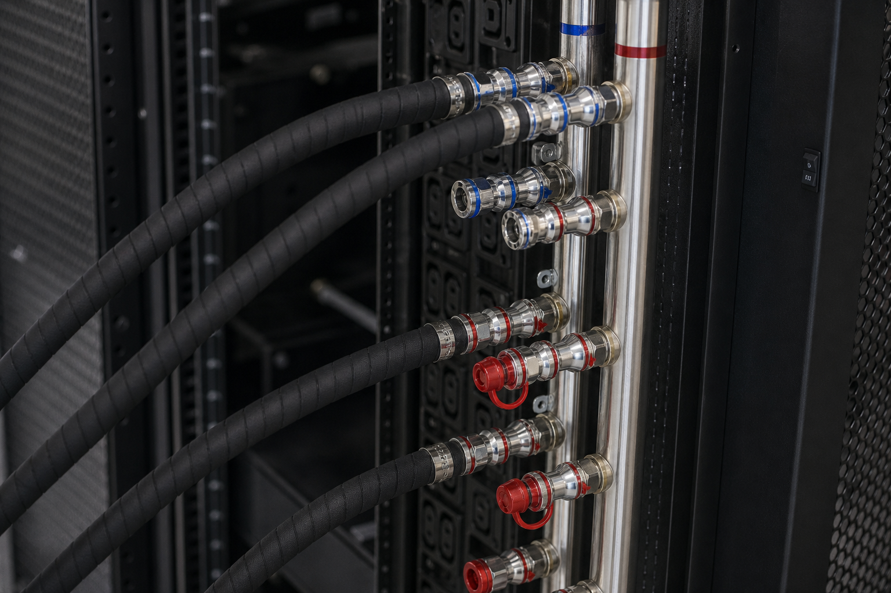

1. 概述
本报告定义CDU-200-GB300液-液式冷却液分配单元的产品需求、工艺液路、热工水力、关键部件、控制器、使用维护和验证方法，目标是形成可向不同GB300 NVL72 OEM配置适配的200kW产品平台。
项目 说明 产品定位 单柜/小型Pod级L2L CDU，以板式换热器隔离设施水和IT洁净冷却液，并精确控制机柜入口温度、流量及压差。 能力边界 200kW换热平台、19m³/h平台最大流量、250kPa候选泵总差压；机外可用余压和OEM运行点须另行水力闭合。 目标客户 AI数据中心业主、托管运营商、GB300整机集成商、冷却系统集成商以及高可用机房运维团队。 设计重点 双泵与双电源、在线过滤、低泄漏压力边界、暖水运行、露点保护、故障降级、本地自治和可维护性。 文档用途 产品定义、供应商询价、详细设计输入和FAT/SAT基线；不直接替代制造图、法规文件或OEM ICD。
1.1 关键设计结果
设计主题 关键结果 工程解释 状态 适配边界 面向GB300 NVL72不同OEM配置；OEM模式覆盖入口25–45℃、3.54–10.62m³/h及16–127kPa机柜压降 控制器按订单ICD调用工况表，并同时限制入口流量、差压和绝对压力 待ICD冻结 平台保证工况 FAT-A：TCS 32/42℃、FWS 27/37℃、5K端温差；FAT-B：40/50℃、37/47℃、3K端温差 两个FAT点用于验证CDU平台换热能力，不是机柜固定运行参数 采购保证点 流量与接口 DI水FAT约17.3m³/h（1.44 L/min·kW）；PG25约18.6m³/h；平台按19m³/h校核；TCS/FWS接口DN65初选 行业10K初筛常用1.0–1.5 L/min·kW；正式机柜运行不得直接施加19m³/h平台最大流量 初选 产品形态 柜式L2L，外形按600×1200×2000mm级与IT机柜同宽；不采用4U/30–120kW机架式 机架式只覆盖实验室/单节点；GB300单柜150kW液冷必须用柜式双泵平台 形态冻结 中断窗口 泵切换目标≤15s，硬限30s；漏液硬接线立即切断 GPU冷板可中断窗口约90s，不能按传统机房30min恢复设计 控制硬约束 板式换热器 FAT-B污堵UA≥66.7kW/K；有效面积初估≥22m²；两侧设计压降目标≤40kPa 可拆式逆流板换，TCS/FWS物理隔离；DI水与PG25分别由厂家选型 厂家复核 二次循环泵 2×100%无轴封变频泵；候选单泵19m³/h@250kPa总差压；4.0kW电机初选 250kPa为泵总差压，不是机外可用余压；须扣除CDU内部损失并校核关死点和NPSH 候选值 液路与维护 热回液→双联25μm过滤→泵→板换→冷供液；膨胀/补液/脱气接泵吸入侧支路 过滤器在线切换但无未过滤直通旁路；排气、排污和PSV全部接封闭收集 P&ID基线 控制与安全 CP-201采用外购工业控制板及BSW，自研CDU控制算法、状态机和OEM适配层；独立硬接线安全链 板卡供应商负责硬件/BSP/驱动基础质量，自研软件负责温控、压差、泵切换、诊断和接口；安全继电器独立保护 算法自研 成本与售价 首批GB300定制目标39.8万元未税；国产标准量产目标34.8万元；运营商集采目标30.8万元 首批COGS约29.4万元；量产需降至25.5万元、集采需降至23.5万元，才能维持约24%–27%毛利率 分场景定价
1.2 关键术语说明
CDU： Coolant Distribution Unit，冷却液分配单元。 L2L： Liquid-to-Liquid，以液体回路向另一液体回路换热。 产品平台： 通过选配和参数配置适配多个客户工况的共用硬件/软件基础。 保证点： 合同规定必须达到容量、温度、流量和压差的组合工况。 ICD： 机柜与CDU之间的受控接口文件。
2. 客户产品需求与CDU设计输入
产品定义： CDU-200-GB300 为适配不同OEM GB300 NVL72机柜的液-液式单相水基CDU。额定能力200 kW、项目液冷设计负荷150 kW；不能把单一32/42℃和固定流量写死，而应按客户所选OEM的入口温度—流量—压降工况表自动调用泵压差和温控设定。设备采用可拆式板换、2×100%无轴封变频泵、在线可维护过滤、双路供电、外购工业控制板及BSW、自研CDU控制算法、独立安全链和全路径漏液监测。
200 kW 平台换热量
19 m³/h 平台最大流量
250 kPa 候选泵总差压
UA≥66.7 污堵工况kW/K
2.1 客户需求证据与产品响应
客户/产品 公开要求 CDU产品响应 NVIDIA参考架构 142kW/柜、混合液冷、机柜/Tray漏液检测；详细设施接口由OEM受控文件提供 容量不低于200kW；接入OEM漏液信号；ICD未冻结时禁止连接正式机柜 Lenovo GB300 135kW TDP/155kW峰值、约90%液冷；DI水推荐或PG25；入口25–45℃；顶部/底部进水 150kW液冷设计；两种工质配方数据集；接口和软件参数订单配置 Lenovo水力工况 25/30/35/40/45℃时59/71/89/119/177L/min，机柜压降2.3/3.2/4.9/8.5/18.4psi 泵控制包络3.54–10.62m³/h、16–127kPa机柜压降；按查表+远端差压闭环，不用固定ΔT估算覆盖OEM值 Schneider RD110 TCS 40/50℃、FWS 37/47℃；CDU N+1；冷却续航5min；CDU/FWS泵由UPS供电 板换增加3K最小端温差保证点；支持多CDU N+1群控、双电源及不少于5min外部UPS接口 同类商业CDU 冗余变频泵、25/50μm二次过滤、双电源、远程通信、在线漏液、温度/流量/压差控制 将这些能力设为基础配置；过滤器、泵、传感器支持不停IT维护或受控降级 行业L2L产品族 公开柜式/机架式能力常见30/70/121/450/600/1350kW；一次侧5–40℃、二次侧10–45℃；DI水或PG25；卫生级卡盘1–4英寸 本产品取200kW柜式，介于121kW机架式与450kW行级柜式之间，专为单柜/小Pod
2.1.1 L2A / L2L 与能力阶梯
风液型（L2A）把二次侧热量排到机房空气，再由机房空调带走，适合无一次水、无架空地板的改造和实验室；液液型（L2L）经板换把热量交给室外冷源，适合100kW+高密新建。GB300生产部署只做L2L。
图 2-1 · L2A / L2L 传热路径与能力阶梯
L2A 风液型（备选，非本产品）
芯片冷板 → 二次侧 → 风液CDU → 机房空气 → 机房空调 → 室外机
场景：风改液、实验室、边缘推理、0冷却塔、0架空地板
公开柜式约70kW（进风25℃）；二次侧供液约42℃；220V；双泵
不能把机房空调能力算进CDU额定换热
L2L 液液型（本产品 CDU-200-GB300）
芯片冷板 → 二次侧 → 液液CDU板换 → 一次侧 → 冷却塔/干冷器/冷机
场景：中大型新建智算、100kW+机柜、高出柜率、精确温控
一次侧供液5–40℃；二次侧供液10–45℃；DI水或PG25
双泵、自动补液、双电源可选；TCS/FWS物理隔离
公开L2L能力阶梯（用于定位，不是本产品型号）
30 4U
121 4U
200 本产品 柜式 · 单柜/小Pod
450 柜式 600宽
600 柜式 600×1200
1350 宽柜 900×1243 · 行/舱级
条带宽度按制冷量近似比例，不是外形图。30/121为机架式，450及以上为柜式。
图 2-1 说明： 200kW落在机架式上限与行级柜式之间，匹配单柜150kW液冷加1用1备。450/600/1350kW级用于多柜共母管，不得用其外形或接口（2.5–4英寸）直接套到本单柜DN65设计。
2.2 采购保证点与订单输入
保证点 产品包络 客户订单输入 验收方式 换热能力 200kW；10%–100%连续调节 OEM/配置、TDP/EDP、同时系数、FWS全年温度 在约定TCS/FWS四温和流量下热平衡FAT FAT-A：5K端温差 DI水200kW；TCS 32/42℃；FWS 27/37℃；TCS约17.3m³/h 旧站FWS能力、露点、余压、可用电源 平台性能验证，不等同于OEM机柜运行点 FAT-B：3K端温差 DI水200kW；TCS 40/50℃；FWS 37/47℃；污堵UA≥66.7kW/K 高温冷源、热回收、极端气象和降额策略 板换厂家选型、阀全开压降和极端环境能力 水力能力 OEM模式3.54–10.62m³/h；平台最大19m³/h；候选泵总差压250kPa OEM流量/压降/最大入口绝压、外管、UQD、工质物性 泵总差压、CDU内部损失和机外可用余压分别冻结 工质/材料 DI水或PG25订单选项；TCS 316L/经验证接液材料 OEM冷却液规范、补液品牌、禁用材料和水质限值 材料兼容矩阵、清洁度和水质报告 可用性/通信 双泵、双电源、本地自治；1–8台群控；BMS/DCIM接口 Tier目标、N+1/2N、协议、点表、网络安全和SLA 故障注入、并机轮换、断网/断电恢复测试
“5 K端温差”释义： 端温差（Approach Temperature Difference, ATD）是板式换热器同一端 两股互不混合流体之间的温差。FAT-A逆流工况中，热端为TCS回液42℃−FWS回液37℃=5 K，冷端为TCS供液32℃−FWS供液27℃=5 K，因此两端端温差均为5 K、LMTD也为5 K。这里的5 K不是 TCS自身42−32=10 K或FWS自身37−27=10 K的供回液温升。温差数值上1 K等于1℃。
严谨性修正： Lenovo整柜流量表与固定10K温升不能拼成同一保证点。17.3m³/h仅是DI水200kW/10K的CDU FAT流量；PG25按ρ≈1025kg/m³、cp≈3.78kJ/(kg·K)估算需约18.6m³/h，平台按19m³/h校核。250kPa是候选泵总差压，不是机柜入口可用压差；OEM模式必须实施入口流量、差压和绝对压力三重限幅。
2.3 分层性能保证点
层级 热负荷/工质 四温与流量 适用边界 OEM机柜模式 由具体机柜ICD 入口25–45℃对应OEM流量/压降；回温和工质由OEM确认 控制器不得强制10K温升；不允许使用19m³/h平台流量冲击机柜 FAT-A 200kW/DI水 32/42℃ TCS，27/37℃ FWS，TCS约17.3m³/h 验证5K端温差平台性能 FAT-B 200kW/DI水 40/50℃ TCS，37/47℃ FWS，LMTD=3K 验证暖水板换污堵UA≥66.7kW/K FAT-PG25 200kW/PG25 10K温升约18.6m³/h；四温按订单选择 最终流量按供应商实际ρ、cp和黏度修正
2.4 关键术语说明
TDP/EDP： 持续热设计功率/工作负载峰值功率。 工况包络： CDU必须安全覆盖的温度、流量、压降和工质范围。 端温差/ATD： 板换同一端TCS与FWS之间的接近温差；FAT-A热端42−37=5 K、冷端32−27=5 K。端温差不得与单一回路的供回液温差混淆，后者在FAT-A中为10 K。温差数值上1 K=1℃。 订单配置： 在标准平台上按OEM接口选择工质、管口方向、控制参数和通信选项。 L2A： 风液型CDU，二次侧热量排向机房空气。 比流量： 单位换热量所需体积流量，常用L/min·kW；10K初筛约1.0–1.5。 采购保证点： 用于FAT判定的合同性能工况。 FAT-A： 常规5K端温差工厂验收工况，DI水条件下TCS 32/42℃、FWS 27/37℃，主要验证200kW常规换热能力。 FAT-B： 暖水3K端温差工厂验收工况，DI水条件下TCS 40/50℃、FWS 37/47℃，主要验证污堵UA≥66.7kW/K的高要求板换性能。两者均为CDU平台测试点，不等同于OEM机柜运行点。
3. CDU系统原理图（P&ID）
图 3-1 · CDU-200-GB300 工艺原理简图
PROCESS SCHEMATIC · 正常运行流向
GB300 NVL72 · ITE边界
机柜 Manifold 冷板 / UQD 约90%热量由液路带走 OEM受控接口
边界条件 入口温度/流量/压降 按订单OEM工况表 严禁按固定ΔT替代
CDU-200-GB300 供货边界
TCS-R 42℃
F-201A/B 双联25μm过滤
P-201A/B · 1用1备
HX-201 板式换热器 TCS / FWS物理隔离
TCS-S 32℃ · CDU → 机柜
TK-201 膨胀 / 补液 / 脱气 泵吸入侧支路
CP-201 控制器 TCS温度 / 远端压差 泵轮换 / 漏液联锁
项目 FWS · 非CDU供货
FWS-R 37℃ · 至冷源
YS-101 100μm
TCV-101 温控阀
FWS-S 27℃
设施泵 + 室外冷源 项目侧N+1
正常流程： 机柜热回液 → 双联过滤 → 工作泵 → 板换 → 冷供液回机柜；FWS冷供液 → 过滤/温控阀 → 板换 → 热回液至冷源 红=热回液 蓝=冷供液 绿虚线=控制信号 板换四接口按逆流布置，两种工质仅传热、不混合
图 3-1 说明： 依据 OCP L-L CDU 及公开液-液式 CDU 典型液路重绘。图中已按正常流程布置设备：TCS热回液先过滤、后进入冗余泵，再进入板换；FWS冷供液经粗滤和温控阀进入板换另一侧。板换四接口及箭头明确表示逆流换热，两种工质不连通。
图纸层级： 图3-1用于快速理解工艺和供货边界；图3-2展开阀门、仪表、排气、排污、泄压与旁通，是FEED阶段流程基线。外部FWS泵和冷源不计入CDU本体BOM。
3.1 CDU详细 P&ID（阀门、仪表、排气排污和控制回路）
图 3-2 · CDU-200-GB300 详细 P&ID
图示FAT-A：TCS 32/42℃、DI约17.3m³/h；FWS 27/37℃ | FAT-B与OEM模式见保证点表 | 压力保护须按最弱接口MAWP冻结
TCS 二次侧工艺回路 · CDU供货范围
FROM RACK TCS-R · 热回液 → HV-201 NO
PT TT FT 201R / 201R / 201
F-201A 25μm F-201B 25μm
DP DP PDIT-204
HV-207 LO · 在线不得关闭
TK-201 · 容积TBD 膨胀/补液/脱气 LT-201 / LSLL/LSH
PSV 至封闭收集箱
DV-201 NC
HV-202A
P-201A · VFD-A
NRV-201A HV-203A
HV-202B
P-201B · VFD-B
NRV-201B HV-203B
PT DP PT-202 / DPIC-201
HX-201 · 可拆式板式换热器
PLATE PACK 逆流 · 两侧物理隔离 UA≥66.7 kW/K
TCS-R → ← TCS-S → FWS-R FWS-S ←
200kW · 设计ΔP≤40kPa/侧 · 四接口按逆流布置
TO RACK TCS-S · 32℃
HV-204 NO
TT PT TT-201S/PT-201S
BV-201 可选最小流量旁通
AV-202 高点排气 DV-202 低点排污
FWS 一次侧工艺回路 · 项目接口
一次侧设计边界 设施泵提供流量/压头 · CDU调节TCV-101 FWS与TCS不混合 · 最低供温受露点限幅 FAT-A 27/37℃ · FAT-B 37/47℃
CP-201 外购硬件/BSW + 自研算法
TIC-201 TT-201S → TCV-101 · 串级PID+负载前馈
DPIC-201 远端PDIT-301 → VFD-A/B · 动态压差重置
LIC-201 LT/LSLL/LSH → 补液与低液位保护
SAFETY Leak / PSHH / E-Stop → 隔离、降载或Trip
COMMS Modbus TCP · SNMPv3 · MQTT · OPC UA
双AC / 双24VDC · 本地自治 · 上位通信中断不停冷
TO FWS-R · 37℃ →
PT TT PT/TT-102
HV-102 NO
AV-101
← FROM FWS-S · 27℃
HV-101 NO
YS-101 100μm
FT PT TT FT/PT/TT-101
TCV-101 · 失效位待HAZOP
HV-103 NC HX隔离维护旁通
DV-101 → 封闭排放
TIC-201输出
线型： 蓝实线=冷供液 红实线=热回液 绿虚线=控制信号 橙虚线=旁通/维护支路 箭头=正常运行流向
符号： HV手动隔离阀 · NRV止回阀 · TCV温控阀 · BV最小流量旁通 · AV排气 · DV排污 · PSV安全泄压 · NO常开 · NC常闭
正常流程：TCS-R → F-201A/B → P-201A/B → HX-201 → TCS-S；FWS-S → YS-101/TCV-101 → HX-201 → FWS-R。
安全要求：排气/排污/泄压均接封闭收集；泵出口设止回；维护旁通锁闭；仪表根部阀与校验接口在施工图逐点展开。
图 3-2 说明： 板换图符参考 ISO 14617-11，并增加板片组、四接口名称和方向箭头。一次侧采用上下双母线：FWS-S由右向左依次经过隔离、粗滤、流量/压力/温度测量和TCV后进入板换下部；FWS-R由板换上部向右返回。AV-101、DV-101和HV-103分别承担高点排气、低点排污及板换隔离维护期间的一次侧跨接。
3.2 水流方向核验
回路 经核实的正常流向 核验结论 TCS主回路 机柜热回液TCS-R → HV-201/入口仪表 → F-201A或B（双联过滤，不允许直通旁路）→ 泵吸入母管 → P-201A或B → NRV/HV-203 → HX-201热侧入口 → HX冷侧出口 → TT/PT/HV-204 → 机柜冷供液TCS-S 过滤器位于泵前；泵只提供压头、不改变温度属性，因此泵出口至板换入口保持红色热液，板换出口后才转为蓝色冷供液。 FWS主回路 设施冷供水FWS-S → HV-101/YS-101/FT/PT/TT → TCV-101 → HX-201下部冷端入口 → 逆向向上换热 → HX上部热端出口 → PT/TT/HV-102 → 设施热回水FWS-R 与TCS热液自上向下形成逆流；FAT-A为27→37℃，TCS为42→32℃，两端接近温差均5K。 膨胀/补液支路 接在过滤后、泵吸入口母管的低压稳定点；TK-201承担膨胀、补液和脱气 不得串入主流量路径；在线PSV通路锁开，TK容积按系统液量计算。 最小流量旁通 从板换后TCS供液高压侧返回泵吸入低压侧 仅为项目可选保护支路，正常近闭；位置、口径、开启压差和失效位由泵最小流量及HAZOP冻结。
方向核验结果： 已修复原图三处错误：双联过滤器不再被主管直通旁路；泵出口至板换入口改为热回液颜色；FWS改为从板换下部进入、上部流出，与TCS形成逆流。
3.3 管线、阀门和仪表索引
类别 位号/线号 设计状态 关键要求 TCS主管 TCS-R/S-065-PN10-316L 图示FAT-A 42℃回液/32℃供液 DI FAT约17.3m³/h、PG25 FAT约18.6m³/h；OEM模式按ICD限流/限压 FWS主管 FWS-S/R-065-PN10 图示FAT-A 27℃供水/37℃回水；FAT-B 37/47℃ 设置100μm前置过滤；与TCS物理隔离；冲洗旁通正常锁闭 泵隔离与止回 HV-202A/B、NRV-201A/B、HV-203A/B 正常全开 任一泵可不停机隔离更换；止回阀关闭冲击需水锤校核 温控阀 TCV-101 调节；失电开 等百分比；阀权度0.3–0.5；全开压降不得破坏FWS流量 安全泄压 PSV-201 + 各封闭段TRV 主PSV不可隔离；TRV常闭 按最弱部件MAWP整定并排至封闭箱；详细施工图逐段展开热泄压 关键测点 TT/PT/FT/PDIT/LT/Leak 连续监测 温度系统精度±0.3℃；流量±1%；压力/差压±0.5%FS；断线诊断
3.4 关键术语说明
P&ID： 管道仪表流程图。 HV/NRV/TCV： 手动隔离阀/止回阀/温度调节阀。 AV/DV/PSV： 排气阀/排污阀/安全泄压阀。 TT/PT/FT： 温度、压力和流量变送器。 PDIT： 差压指示变送器。 Fail-open/Fail-last： 失去能源时阀门打开/保持最后位置。
4. 热工、水力及机械设计计算
4.1 板式换热器
项目 计算 结果 采购值 额定换热量 产品额定 200 kW ≥200 kW连续 FAT-A对数平均温差 27→37℃与32→42℃，逆流两端温差均5K LMTD=5K；理论UA=40kW/K 非控制性工况 FAT-B控制工况 37→47℃与40→50℃，逆流两端温差均3K LMTD=3K；污堵UA≥66.7kW/K 以暖水工况控制板换选型 有效面积初估 200kW/(3K×3500W/m²K)×1.15污垢/裕量 约21.9m² 初选≥22m²；厂家按DI/PG25分别复核 压降 一次/二次侧分别约束 目标≤40 kPa/侧 洁净/污堵状态均提供曲线
4.2 泵与管路
参数 设计值 说明 TCS流量包络 OEM运行3.54–10.62m³/h；DI FAT约17.3m³/h；PG25 FAT约18.6m³/h 平台最大19m³/h仅用于独立试验环路，禁止直接施加至机柜 初步最不利压降 约222kPa @OEM 45℃点 机柜127+外管20+过滤器终阻25+板换40+阀件10kPa；须用厂家Q-ΔP及PG25物性复算 泵能力定义 候选泵总差压250kPa；机外可用余压=泵总差压−CDU内部损失 同时校核泵关死点、吸入静压和机柜入口最大绝压；未闭合前不得冻结泵 泵/电机 19m³/h@250kPa候选；电机4.0kW初选，IE4，VFD 按PG25、全转速最大轴功率、VFD降额和最低综合效率复核 TCS/FWS主管 DN65，设计流速约1.5 m/s 316L优先；坡度、高点排气、低点排液 膨胀/补液容积 待系统总容积和工质冻结后计算；当前布置尺寸不构成容量保证 按DI/PG25膨胀率、最低/最高温、接受容积、预充和补液压力复算 压力保护 机柜入口PT+独立PSHH+VFD硬限幅；主循环不可隔离PSV；封闭液段设热泄压 整定值以OEM入口MAWP和各区段最弱部件为准；PSV前阀锁开/受控
4.3 GB300内部架构与OEM水力边界
接口层级 公开产品构成 可用设计输入 不可擅自假定 CDU策略 Compute Tray 18个；每Tray 4×B300、2×Grace及相关液冷器件 数量、混合液冷、OEM内置QuickConnect 单Tray负荷、两回路分流、孔阻和UQD压降 不做逐Tray主动配流；仅按OEM整柜接口供液 NVSwitch Tray 9个液冷NVSwitch Tray 数量及属于整柜液冷负荷 单Tray流量/压降及与Compute回路比例 不设置设施侧独立节流，除非OEM提供接口 整柜TCS接口 DI水/PG25；顶/底进水；25–45℃流量与压降表 59–177L/min、2.3–18.4psi随入口温度变化 用固定10K温差反推流量并覆盖OEM表 入口温度查表前馈+远端压差修正+入口压力限幅
公开资料不足以可靠分解单Tray流量。此前按12L/min/Compute Tray和3L/min/NVSwitch Tray的初设会超过Lenovo公开整柜最大177L/min，已删除，不再作为设计或采购输入。
4.4 歧管、阀门和水泵优化后的压降预算
压降环节 原设计预算 优化目标 优化措施 Compute/NVSwitch冷板与Tray内部 含在90 kPa终端预算 ≤80–100 kPa，以OEM曲线为准 两类支路分别平衡；不以高压差强行弥补水力失衡 OEM机柜Manifold 含在OEM压降表 整柜约16–127kPa @3.54–10.62m³/h 设施侧不改变内置总管/三区/Tray节流；仅优化CDU至机柜外管 外部管路/UQD 30 kPa ≤20 kPa DN65主管、短路径大弯半径、减少90°弯头和多余快接 双联过滤器 25 kPa终阻 洁净≤5 kPa；报警20 kPa；切换25 kPa 并联大面积滤芯、在线切换，避免以泵功长期覆盖脏堵 板式换热器 40 kPa ≤35–40 kPa 通过板型/板片数平衡面积和压损，不追求过高流速换热 阀件 15 kPa ≤10–15 kPa 总阀全通径；支路以低阻固定孔板/平衡阀替代大量主动阀 泵总差压候选 原初设200kPa 暂按250kPa进行平台选泵，机外可用余压须扣除CDU内部损失 OEM流量/差压/入口绝压三重限幅；厂家曲线和关死点压力验证后冻结
4.5 阀门架构与失效位置
阀门 数量/位置 正常状态 失效位置 设计理由 CDU总隔离阀 TCS/FWS供回各1 全开 手动阀保持；若电动则Fail-last 失电不能误关而导致整柜瞬时失冷 OEM内部Zone/Tray阀 不属于CDU基础供货 由OEM定义 由OEM定义 公开资料不能证明独立Zone接口；CDU仅接整柜供回口 远端最小流量旁通阀 项目可选，位置由水力设计冻结 近闭 不得预设FO 开启压差、最大旁通量和失效位经最小泵流量及机柜失流HAZOP确定 一次侧温控阀 FWS入口1个 调节 待HAZOP冻结 失电过热保护与低温凝露风险必须联合评估；P&ID和规格书保持一致
NPSH： 采购要求 NPSHa ≥ NPSHr + 1.0 m。最终 NPSHa 必须结合最低液位、泵中心标高、最高液温、当地海拔及吸入管损失计算。
4.6 关键术语说明
LMTD： 逆流换热器对数平均温差。 UA： 总传热系数与有效换热面积的乘积。 泵工作点： 泵曲线与系统阻力曲线的交点。 NPSHa/NPSHr： 系统可用/泵要求的净正吸入压头。 阀权度： 调节阀压降占受控回路总压降的比例。 水锤： 流量快速变化引起的瞬态压力冲击。
5. 关键零部件规格书
Tag/部件 数量 主要规格 材质/接口 质量与验收 HX-201 板式换热器 1 200kW；FAT-B污堵UA≥66.7kW/K；初估面积≥22m²；DI/PG25分别选型；ΔP≤40kPa/侧 316L板片；EPDM/FKM按工质；DN65初选 厂家热工计算书必须覆盖3K端温差、污垢和公差；各压力边界分段试压 P-201A/B 二次泵 2 候选19m³/h@250kPa泵总差压；4.0kW初选；IE4；VFD；最高液温60℃ 屏蔽/磁力；316L接液；PN10/16 提供DI/PG25全曲线、最大轴功率、允许区、效率岛、关死点和NPSHr；最终选型待压力包络闭合 OEM机柜Manifold/Zone阀 不在CDU基础供货 流量、压降、UQD和可隔离边界由OEM ICD定义 CDU仅提供整柜DN65供回接口初选 无OEM书面独立Zone接口时，不采购MH-201/ZV-201 BV-201 最小流量旁通 项目可选 位置、口径、开启压差及最大旁通量由泵厂家/项目水力计算确定 316L；正常近闭；失效位待HAZOP 验证泵最小流量且不导致机柜失流；图纸位置与现场一致 F-201A/B 双联过滤器 2腔 25μm绝对精度或OEM更严值；目标Beta比/纳污量按ISO 16889或等效；洁净ΔP≤5kPa，终阻≤25kPa 316L壳体；可在线切换；无未授权旁通至机柜 提供DI/PG25 Q-ΔP曲线、滤芯完整性和可追溯证书 TK-201 膨胀/补液/脱气 1 容积待总液量、DI/PG25膨胀率、温区、接受容积和预充计算 密闭；补液防倒流；新液/系统液隔离；LT/LSLL/LSH 低低停泵；频繁补液泄漏报警；不得作为5min蓄冷罐 PSV/TRV压力保护 按压力区段 主TCS设不可隔离PSV；所有可双端封闭受热液段设TRV；整定低于最弱部件MAWP 排至封闭收集箱；PSV前阀锁开或法规认可切换结构 整定/排量计算、铅封和法规校验；OEM机柜另设入口PSHH硬保护 TCV-101 一次侧阀 1 DN65初选；等百分比；阀权度0.3–0.5；4–20mA PN16；失效位置待露点/过热HAZOP冻结 全行程、失电/断信号、低温FWS和高温负荷测试 UQD/软管 按OEM接口 ≥支路额定流量；分离滴漏<OEM限值；压力等级≥15 bar OCP/OEM兼容；EPDM/FKM按工质 不得替代OEM指定型号；压力循环和插拔寿命 温度变送器 TT 4+2备 0–80℃；Pt100 A级；系统精度≤±0.3℃ 4线RTD/4–20mA；卫生型套管 两点校准证书；可在线更换 压力变送器 PT 4 0–10 bar；≤±0.5%FS 4–20mA；316L膜片 过压能力≥2×FS；校准证书 流量计 FT 2 0–25 m³/h；精度≤±1%；直管段不足时选超声/优化安装 电磁或超声；4–20mA+Modbus 湿标或可追溯标定 差压变送器 PDIT 2 0–300 kPa系统；0–50 kPa过滤器；≤±0.5%FS 三阀组；4–20mA 高高联锁与断线诊断 漏液传感 ≥3区 底盘点式+管路定位线缆；响应<5 s 独立安全继电器输入 逐区注水/模拟测试；断线告警 控制盘 CP-201 1 外购工业控制板/隔离I/O/BSW、HMI/网关、安全继电器、双24VDC和工业交换机；应用算法自研 柜体IP54；双AC输入；SPD/EMI滤波 供应商PPAP/变更控制、100% I/O、断电恢复、EMC、网络安全与HIL测试
5.1 产品环境与安装接口（设计冻结项）
类别 FEED要求 冻结资料 运行环境 室内、非凝露；环境温湿度、海拔和污染等级须覆盖项目机房 最高/最低环境温度、RH、海拔降额及腐蚀性气体等级 机械安装 前后维护、顶部/底部管口可配置；不得布置在不可承受水损的IT设备上方 外形、重量、重心、搬运吊点、地板荷载、维护净距和抗震等级 声学 提供各泵速和满载工况声功率/声压数据 客户噪声限值、测距、背景噪声和测试标准 电气 双独立AC输入、双24VDC、短路/接地/浪涌/EMC保护 电压/频率、短路耐受、断路器选择性、UPS接口和适用IEC/GB/UL/CE清单 压力法规 按各压力边界的容积、PS、介质和温度完成法规属性判定 设计/试验压力、PSV/TRV排量、焊接/NDE、材料证书和铭牌要求
5.2 关键术语说明
Tag： 设备、阀门或仪表的唯一工程位号。 PN： 管件和设备的公称压力等级。 IE4： IEC高效率电机等级。 EPDM/FKM： 常用弹性密封材料，必须按工质兼容性选择。 FS： 仪表满量程。 SPD/EMI： 浪涌保护器/电磁干扰抑制。
6. 关键部件结构示意图
功能框图（图6-1）只表达接口关系。图6-0按600×1200mm柜体俯视比例布置：板换占长度方向约1/3，两台泵并排约占中部，双联过滤器与膨胀罐更小，控制腔贴侧壁独立隔开。不得把泵画成与板换同等体积，也不得把4U小CDU的内部密度套到本柜式平台。
图 6-0 · CDU柜体俯视尺度（600×1200mm，比例约1:2.7）
柜体 600宽 × 1200深
板换
约400×220
泵A
泵B
双联过滤
膨胀
控制腔
约150mm宽
主控/I/O
安全继电器
24V / 交换
与液路隔开
尺度约束
板换是体积最大的换热件
两台屏蔽泵并排，单台远小于板换
过滤器为筒体，可在线抽出
膨胀罐不承担5min蓄冷
控制腔独立，电缆不穿越湿区
前后维护：泵/滤芯前门，接口后门
卫生级卡盘：本机DN65≈2.5英寸级
公开450/600kW柜同为600mm宽
1350kW级宽约900mm，不套用
前门（维护面） ← 柜深1200mm → 后门（一次/二次接口）
图 6-0 说明： 俯视按600×1200mm柜体绘制。板换立式放置、泵为圆柱体、过滤器成对小筒、控制腔为窄条，符合柜式L2L的真实空间分配。
图 6-1 · CDU 关键部件功能结构与接口（非制造图）
A. 可拆式板式换热器
TCS-R↓ FWS-R↑ TCS-S FWS-S 316L板片 · EPDM/FKM垫片 初估面积≥22m² · DN65初选 污堵UA≥66.7kW/K · 厂家复核
B. 屏蔽泵/磁力泵
无机械密封 · 零外漏优先 候选19m³/h @250kPa · 4.0kW 总差压定义 · 厂家曲线冻结
C. 双联过滤器
切换阀 25μm · 2×腔体在线切换 PDIT监测污堵 · 无未过滤旁通
D. 膨胀/补液/脱气箱
脱气 LT液位 有效容积待膨胀计算 补液泵/排气/液位联锁
图 6-1 说明： 板换四接口按逆流原则标识，TCS 与 FWS 不混流；泵图仅表示无轴封优先，不指定叶轮结构；双联过滤器可在线切换，但禁止设置绕过滤芯直通负载的未过滤旁通。外形、壁厚、法兰、支撑和检修空间由厂家详设。
6.1 产品三维效果图（按行业实物照片建模）
下列效果图为按液冷行业在售产品实物照片建模的示意渲染，用于统一外形、接口布置和检修方式的沟通口径；不作为制造图、不代表最终外观，尺寸、标识和认证信息以详设图纸为准。参照实物见 6.3 节来源清单。

图 6-2 · 前维护面接口语言（模块示意） 本产品为600mm宽柜式L2L，不是4U机架式整机。本图只借用行业前维护面语言：10英寸HMI、可抽出泵模块与安全标牌、控制腔进风格栅。整柜高度与IT机柜接近，见图 6-0 。

图 6-3 · CDU 背面（工艺与电气接口面） 2×2布置的大口径不锈钢快接：二次侧供/回（TCS）与一次侧供/回（FWS）分区，另设FILL补液口与DRAIN排放口（蓝色帽）；右侧A/B双路电源进线各带独立开关，RJ45通信口、漏液检测与报警继电器采用绿色可插拔端子，并设EPO与BMS接口。对标 CoolIT CHx200 背板。

图 6-4 · CDU 内部布置（开盖俯视） 左端立式可拆板式换热器（框架板+拉杆+板片组），中部2×100%无轴封泵并联安装于减振垫上、各配变频器，前端双联不锈钢过滤器与三通切换阀，右上小型膨胀/脱气罐带液位变送，管路上分布温度、压力和压差变送器；右侧独立控制腔内为导轨式控制板、隔离I/O与安全继电器。对标 Supermicro CDU 内部与控制腔实物。

图 6-5 · 机柜歧管与UQD快接界面（OEM边界） 机柜后部竖直双歧管，蓝环为供液、红环为回液；不锈钢盲插快接分层引出，部分已对接橡胶编织软管，未使用口装红色防尘帽。该界面属OEM机柜供货范围，CDU侧只负责在此界面上满足温度—流量—压降工况。对标 Supermicro 立式歧管与 LITEON GB200 NVL72 机柜后部实物。
6.2 关键术语说明
可拆式板换： 可通过增减板片调整能力并拆洗的垫片式换热器。 屏蔽泵： 电机与泵体形成密闭结构、无外置机械轴封的泵。 磁力泵： 以磁耦合传递扭矩并隔离介质的无轴封泵。 双联过滤器： 两腔切换以实现在线维护。 脱气： 去除循环液中游离和溶解气体的过程。 盲插快接（UQD）： 随托盘插入自动对接、带自封阀的液冷专用快速接头。
6.3 效果图参照的行业实物来源
效果图建模前已逐张比对下列算力液冷行业在售产品实物照片，形体、接口位置、颜色标识和维护方式与实物一致；本地留存于 assets/ref/ 以便复核。
使用限制： 效果图为示意渲染，不得用于采购验收、尺寸标注或对外承诺外观。参照来源为第三方媒体实拍与厂商产品页，仅用于形体校核，不代表本产品与上述品牌存在技术或商业关联。
7. CDU控制器总体设计方案
控制原则： CP-201采用“外购工业控制板/I/O/BSW + 自研应用算法”架构。板卡供应商提供BSP、RTOS/基础软件、驱动、诊断和安全升级基础能力；本产品自研温度/压差控制、泵切换、状态机、故障诊断、OEM工况表及通信数据模型。独立硬接线安全链负责急停、严重漏液、低低液位和超压保护，避免把未经认证的自研算法作为唯一安全措施。GPU冷板可中断窗口约90s：工作泵故障须在15s内完成重叠切换（硬限30s），供液超温60s内联动一次侧阀与降载，漏液由硬接线立即切断。
7.1 控制器架构图
图 7-1 · CP-201 控制器分层架构与信号方向
上位系统层
DCIM / BMS NVIDIA/OEM 管理平台 运维工作站 远程告警/工单
CDU控制层
外购控制板 + BSW MCU/RTOS/BSP/驱动 诊断/看门狗/安全启动 自研CDU应用算法 PID/状态机/泵切换/OEM适配
硬接线安全链 急停/漏液/LSLL 超压/电机保护 安全继电器 独立于IPC
外购Gateway / BSW Linux LTS / TPM / OTA 自研协议与数据应用 Modbus/SNMP/MQTT/Redfish 历史库/诊断/审计
HMI 10–15英寸 本地/远程/维护 趋势/报警/配方
双电源 AC-A / AC-B 双24VDC 冗余模块 项目UPS≥5min
现场设备层
TT/PT/FT/PDIT/LT 漏液/水质/露点 VFD-A / VFD-B TCV/隔离阀 补液泵/风机/加热器
蓝↑=测量/状态输入 橙↓=执行命令 红↔=硬接线安全链 绿虚线↔=受控网络通信 灰线=冗余电源
OT与企业IT经防火墙/白名单隔离；远程写操作分级授权并审计；上位通信中断不影响本地冷却
图 7-1 说明： 控制硬件和BSW外购，自研范围从硬件抽象层之上的CDU应用软件开始。供应商必须提供长期供货、SBOM/CVE响应、版本兼容、驱动源码或托管机制及PCN/EOL通知；本公司负责算法需求、模型/代码、标定、HIL和整机验证。安全继电器绕过应用软件独立撤销泵/阀使能。
7.2 控制器硬件规格
模块 最低规格 数量/冗余 说明 外购实时控制板及BSW 工业级MCU；RTOS/BSP/驱动；双看门狗；FRAM；RTC；安全启动；双以太网；供应商长期支持 1；预留双控制器仲裁接口 控制周期≤20ms；提供API/SDK、版本矩阵、SBOM、PCN/EOL和漏洞修复承诺 模拟输入 AI 4–20mA/RTD隔离；16 bit；断线诊断 ≥24点，预留20% 温度、压力、流量、差压、液位、水质 数字输入 DI 24VDC隔离；SOE毫秒时间戳 ≥32点，预留20% 泵/阀状态、漏液、保护、急停 模拟输出 AO 4–20mA隔离；回读诊断 ≥8点 VFD、一次侧调节阀及备用 数字输出 DO 继电器/晶体管；中间继电器隔离 ≥24点 泵阀启停、补液、声光报警 安全继电器 双通道急停、复位监控、强制导向触点 1套 独立执行紧急停机/隔离 外购Gateway及BSW 工业级SoM；双网口；TPM；≥32GB eMMC；Linux LTS/BSP；只读恢复分区 1；可选独立模块 应用与协议自研；供应商提供签名OTA、回滚、CVE和LTS支持 HMI 10–15英寸；IP65前面；角色权限；趋势与报警 1 关键设定修改需二次确认 电源 2×24VDC 20A；冗余模块；输入SPD/EMI 1+1 AC-A/AC-B独立来源；失一路不停机
7.2.1 五分钟续冷电气边界
UPS负载 最低供电范围 设计方法 CDU本体 至少1台TCS泵、CP-201主控/安全继电器、关键TT/PT/FT/PDIT/Leak、HMI/通信及必要阀执行器 按实际输入功率、VFD效率、启动/重叠切泵和电池末端电压计算kVA/kWh，不以电机铭牌简单相加 项目设施 至少1条FWS循环路径及其泵/阀；若不能持续排热，配置独立热缓冲并联动IT降载 暂按155kW机柜峰值+5kW泵热=160kW、10K、5min估算≥1.15m³有效水量，初选≥1.3m³后做瞬态校核 验收 双路交流失电5min，记录流量、入口温度/绝压、UPS SOC和IT降载 全过程不越OEM接口限制；冷源恢复后无水锤、温度超调或控制器失序
7.3 核心控制逻辑
功能 输入 算法/逻辑 输出 性能目标 TCS供液温控 TT-201/202、IT功率、FWS温度、当前配方 OEM/FAT-A/FAT-B独立参数集；负载前馈+串级PID；报警按设定偏差而非固定温度 TCV-101开度 稳态±0.5℃；不得与OEM最高入口温度/露点约束冲突 TCS压力/流量控制 机柜入口/回口PT/PDIT、FT、IT功率、OEM工况表 入口温度查表前馈+远端差压PID；入口流量、差压和绝对压力三重限幅 VFD频率 OEM接口不超流、不超压；异常不以盲目升速掩盖 整柜能量诊断 TCS总流量、供回温、IT功率、补液量 整柜质量/能量平衡；识别堵塞、气阻、泄漏和测点漂移 告警、设定修正、维护建议 不依赖公开资料未确认的Zone FT或Zone阀 泵轮换与切换 运行小时、振动、电流、故障、流量/压差 每周或累计100h先到者轮换；每日短时防卡转；故障时重叠启备用泵并按VFD斜坡切换 启备用、确认流量后停故障泵 恢复时间由OEM允许最低流量持续时间和水锤试验确定，不预设<1s 补液/脱气 LT、LSL/LSH、水质 液位带回差控制；补液次数诊断泄漏 补液泵/阀、脱气器 频繁补液报警，不掩盖泄漏 露点保护 机房T/RH或BMS露点 TCS设定≥露点+3K；低裕量限幅 提高供液温度、报警 任何运行模式不低于露点+2K
7.4 状态机与 Cause & Effect
状态 进入条件 主要动作 退出条件 OFF/安全停机 急停、安全链断开、维护隔离 泵停；阀至安全位；保留监控 故障清除+授权复位 FILL/PURGE 首次注液或维护后 低速泵、排气、液位控制；禁止带IT满载 气泡/液位/压力稳定 STANDBY 系统健康、IT未请求冷却 阀预置、泵待机、定期防卡转 收到冷却请求 RUN 冷源、液位、阀位和安全链正常 温度/压差闭环；记录KPI 停机请求或故障 DEGRADED 单传感器/单电源/备用泵不可用 保持运行、限制负荷、立即告警 恢复或升级为Trip TRIP 严重漏液、双泵失败、低低液位、PSHH或OEM入口超压 整柜/项目接口隔离、受控停泵、请求IT业务迁移/停机 人工检查和授权复位
事件 一级动作 二级/确认动作 复位 慢速/可疑漏液 告警、定位、提高采样、限制补液并请求业务迁移 第二证据确认后隔离整柜接口；记录最大允许处置时间 修复、干燥、保压和传感回路测试通过 严重漏液 定位线高可信动作、压力快速下降、低低液位或流量失配任一可信硬条件触发立即降载/隔离 阀位确认后受控停泵；不得等待普通双证据投票扩大泄漏 事故复盘、压力边界测试和授权复位 运行泵故障 备用泵立即启动 压差仍不足则请求IT降载 维修后试运行 TCS高温 TCV全开、冷源请求100% 高高温请求功率封顶/安全停机 温度回落并确认冷源 通信中断 本地自治运行、网络告警 不因上位通信中断停冷 通信恢复自动同步 双电源失电 项目UPS维持至少1台TCS泵、CP-201主控、安全链、传感器和必要阀动作≥5min并通知IT 配合设施FWS泵/热缓冲和IT降载；续航末端按受控顺序停机 电源与冷源稳定后按黑启动程序恢复
7.5 关键术语说明
BSW： Basic Software，板级基础软件，包括BSP、RTOS/OS、驱动、启动、诊断和升级能力。 ASW： Application Software，本项目自研的CDU控制算法、状态机、诊断与协议应用。 SBOM： 软件物料清单。 PCN/EOL： 产品变更通知/生命周期终止通知。 HIL： 硬件在环测试。 NRE： 一次性算法、软件工具链和验证费用。
8. 产品使用与维护
8.1 操作模式与启停
模式 操作流程 进入/退出条件 首次注液 FILL/PURGE 确认机柜未上电；使用OEM批准液体；低速点动泵、分区排气、补至目标静压；记录注液量 液位/压力稳定，无连续气泡，水质与保压合格后进入STANDBY 待机 STANDBY TCV预置、泵待命；每日备用泵短时防卡转；保持漏液和温度监测 FWS、至少一台泵、安全链和OEM冷却请求均正常后启动 自动运行 RUN 按OEM入口温度查表给出流量前馈，远端PDIT修正泵速；TIC调节FWS阀；记录能量平衡 机柜入口温度、流量、压力在OEM窗口；异常自动转DEGRADED/TRIP 降级 DEGRADED 单泵、单电源、单传感器或备用能力丢失时维持冷却并限制负荷 维修恢复冗余后回RUN；能力不足则请求IT功率封顶 计划停机/维修 先卸载IT，再停泵；关闭并锁定相关阀；验电、泄压、排液、接液和洁净封堵 执行LOTO；复装后须冲洗/排气/保压/功能测试 在线换液（选配工装） 移动式换液装置接入二次侧；过滤充排；监视失压/过压；7寸本地面板操作 仅在OEM允许且漏液监测有效时进行；换液后水质与保压合格
8.2 预防性与状态维护计划
周期 项目 判据/动作 每日 泄漏、液位、补液频次、压力、供回温、流量、泵电流/转速、过滤器差压和活动告警 补液异常、压力下降或能量不平衡必须创建工单，不得仅复位 每周 复核每日备用泵防卡转记录；执行值班泵轮换（或累计100h先到者）；检查排水盘、漏液线、软管/UQD和双电源 重叠切泵瞬态不得越OEM最低流量/入口压力；失败立即进入降级模式 每月 检查泵振动/噪声、接头渗漏、板换端温差、过滤器差压和传感器趋势漂移 二次过滤器差压建议预警20kPa；按实测终阻和OEM要求更换 每季度 取样检测pH、电导率、浊度/颗粒、缓蚀剂和微生物；复核露点；清洁柜内换热/通风路径 限值取OEM和冷却液供应商较严者；超限先复核再处理 每半年 校验关键TT/PT/FT/PDIT/LT/Leak；演练断网、单泵、单电源及漏液联锁；检查膨胀预充 安全动作与Cause & Effect一致；校验偏差超限即调整/更换 每年/状态触发 板换UA评估、泵振动与绝缘、阀全行程、PSV法规检查、UPS带载和完整FAT回归子集 能力下降>10%、持续振动增长、腐蚀/颗粒异常或频繁补液即安排检修
8.3 维护作业卡和备件
作业 安全与质量步骤 恢复证明 过滤芯更换 切备用筒→锁定隔离→确认零压→接液→洁净更换→缓慢充液排气 无泄漏；差压恢复；废滤芯按污染物属性处置 泵更换 先验证备用泵；隔离故障泵；LOTO；泄压排液；保护开口洁净度 转向、振动、电流、流量/压差和切换测试合格 冷却液处理 新液/废液分用有标签容器；禁止汽车防冻液；禁止不同品牌/配方未经验证混合 补液批次、数量和水质报告可追溯 漏液恢复 定位、隔离、吸液、修复、干燥传感器；不得靠持续补液维持运行 静压/保压、传感器回路和联锁测试通过，授权复位
最低备件包： 1套泵或旋转组件/驱动器关键件、两次维护量过滤芯、1个阀执行器、关键TT/PT/Leak传感器、UQD密封件、控制电源和保险件；配置新液/废液各30L标识桶、吸液设备、接液盘、spill kit、洁净堵帽及校验仪。
8.4 关键术语说明
FILL/PURGE： 注液并排除系统气体的专用模式。 DEGRADED： 冗余能力降低但仍可受限运行的状态。 LOTO： 维修时的上锁挂牌隔离程序。 预防性维护： 按周期执行的检查和更换。 状态维护： 依据趋势和健康指标触发的维护。 洁净封堵： 拆开液路后立即封闭开口以防颗粒和水分进入。
9. 软件、FAT、可靠性与认证验证
验证类别 测试内容 合格判据 热性能 FAT-A、FAT-B和FAT-PG25分别做25/50/75/100%负荷及阶跃；记录热平衡和测量不确定度 200kW平台点达成；FAT-B污堵等效UA≥66.7kW/K；稳态±0.5℃；热平衡偏差按试验规范 水力性能 OEM五个运行点模拟、DI/PG25平台最大流量、过滤器洁净/终阻、泵切换和阀门特性 OEM模式不超流/超差压/超入口绝压；平台19m³/h通过；泵总差压与机外余压分别报告 压力/泄漏 按CDU本体、OEM接口、仪表和封闭液段分区制定强度/气密/循环试验；机柜与敏感件隔离 试验压力不超过任一接入组件允许值；无永久变形、可见泄漏；泄漏率按采购规范 控制软件 单元测试、SIL/HIL、传感器断线/漂移、状态机和Cause&Effect 100%需求可追溯；所有安全动作符合矩阵 电气/EMC 绝缘、接地、浪涌、EFT、ESD、射频抗扰、谐波 GB/T 17626/IEC 61000适用等级；无危险失控 通信安全 账户权限、默认口令、端口扫描、TLS、日志、备份恢复 最小权限；无未授权写入；日志可追溯 耐久 泵启停/切换、阀门循环、压力循环、72–168 h满载老化 无泄漏、性能漂移<5%、无未解释报警
9.1 设计冻结前待确认项
具体 OEM GB300 NVL72 的 TCS 供回温度、额定/最小流量、冷板与 Manifold 压降、UQD型号和水质窗口。
项目所在地夏季设计干球/湿球、海拔、室外冷源形式，以及27℃ FWS全年可达性。
项目已按2×200kW CDU（1用1备）作为可用性基线；详细设计须冻结公共母管、止回/隔离、群控、单台退出和测试旁路。
工质配方及全部接液材料兼容性；铜、铝、316L、弹性体不得未经验证混用。
NVIDIA/OEM 对 Redfish、BMC、功率封顶和安全停机接口的受控协议要求。
9.2 参考来源
9.3 版本更新记录
版本 日期 更新内容 v1.0 2026-08-08 完成200 kW CDU热工水力、P&ID、关键部件、控制器和FAT初步设计。 v1.1 2026-08-08 增加Compute Tray双回路与NVSwitch独立支路负荷分配、三级歧管、优化压降预算、Zone阀门架构、远端压差重置、泵轮换/防卡转及Zone能量平衡诊断。 v1.2 2026-08-08 基于具体OEM与客户参考架构重构输入包络，纠正“额定流量即机柜运行流量”的表达；增加双温度工况、产品使用、预防性/状态维护、作业卡和备件章节。 v1.3 2026-08-08 增加产品概述章节并重排全部章节编号；每章新增与设计、控制、使用和验证内容对应的关键术语说明。 v1.4 2026-08-08 复审热工、水力、压力保护及控制逻辑：暖水板换提升至污堵UA≥66.7kW/K，平台流量提升至19m³/h，泵/电机改为候选值，并关闭Zone越界、续冷和模式报警问题。 v1.5 2026-08-08 核验并修正P&ID水流方向：消除双联过滤器直通旁路，泵出口保持热液至板换入口，FWS改为下进上出并与TCS形成逆流；新增逐回路方向核验表。 v1.6 2026-08-08 优化全部图纸：区分功能图与P&ID，统一流向、线型、图号和图注；扩展P&ID图例；纠正板换四接口冷热标识；禁止未过滤旁通；重画控制架构的输入、输出、安全链与通信方向。 v1.7 2026-08-08 复核图3-1跨边界液路并纠正TCS箭头：机柜热回液由左向右进入CDU/HX，换热后的冷供液由CDU向左返回机柜；增加“机柜→CDU / CDU→机柜”文字标识。详细P&ID图3-2流向复核无误。 v1.8 2026-08-08 参考OCP、公开液-液式CDU及ISO 14617重绘本章两张图：图3-1改为单一主流程和清晰供货边界；图3-2放大板换并明确四接口、逆流方向、TCS/FWS隔离及设备位号，优化分区、配色和图例。 v1.9 2026-08-08 重构详细P&ID一次侧：采用FWS-S下母线右进左出、FWS-R上母线左进右出的直线流程；重新排列HV、YS、FT/PT/TT和TCV；补充高点排气、低点排污、板换隔离维护旁通及明确的TIC控制信号。 v1.10 2026-08-08 增加“5K端温差/ATD”专门注释，明确其为板换同一端TCS与FWS的接近温差，并用42−37及32−27演算；与单一回路10K供回液温差明确区分。 v1.11 2026-08-08 在首页概述增加关键设计结果表，集中展示OEM适配边界、FAT保证工况、流量接口、板换、二次泵、液路维护和控制安全结论及其冻结状态。 v1.12 2026-08-08 新增核心外采BOM、预算采购成本、完全制造成本、建议售价与毛利章节；给出标准、批量和进口增强配置的价格敏感性、采购降本措施及公开价格锚点。 v1.13 2026-08-08 基于国内B2B、专业控温CDU、境外150kW价值量及中国移动300kW采购预算重新校准成本和售价；国内标准目标成交价由78万元下调至39.8万元，并增加分场景竞争力判断。 v1.14 2026-08-08 增加国内外CDU单位kW价格归一化与九类差异来源分析；纠正39.8万元为首批GB300定制价格而非国内标准低价，形成39.8/34.8/30.8万元三级价格。 v1.17 2026-08-15 吸收行业液冷架构与L2L产品手册：增加L2A/L2L与能力阶梯、比流量标尺、90s中断窗口、柜体俯视真实尺度图和在线换液工装；去掉特定厂商中文品牌名；明确200kW为柜式而非4U整机。 v1.16 2026-08-08 新增6.1节产品三维效果图（正面、背面接口面、内部布置、机柜歧管UQD界面）及6.3节效果图参照的行业实物来源清单；效果图按CoolIT CHx200、Supermicro CDU与歧管、LITEON GB200机柜实物照片建模，并注明不得用于采购验收。 v1.15 2026-08-08 审计15类核心BOM数据来源及可靠性，纠正逐项价格区间合计并取消“行业均值”表述；控制架构改为外购工业控制板/I/O/BSW、自研CDU算法与应用层，增加NRE、持续维护和供应商生命周期约束。
使用限制： 本文是初步设计/采购技术条件草案。关键性能仍须由板换和泵厂家复核，压力边界须完成法规判定，控制器安全完整性等级须经项目风险分析确定。未经OEM接口冻结、FAT和现场SAT，不得连接正式GB300机柜。
9.4 关键术语说明
FAT/SAT： 工厂验收测试/现场验收测试。 SIL/HIL： 软件在环/硬件在环测试。 EMC： 电磁兼容性。 压力循环： 反复升降压力验证疲劳和密封可靠性。 需求可追溯： 每项需求均能对应设计实现和验证证据。 认证： 依据适用法规和标准完成的第三方或主管机构符合性确认。
10. 核心外采BOM、成本与建议售价
竞争性结论： 原78万元未税价不具备国内标准市场竞争力。首批GB300高可靠定制产品可按39.8万元/台 谈判，但其1,990元/kW处于国内外公开锚点的高位，属于功能溢价价而非价格优势价。建议形成三级价格：首批定制39.8万元、国产标准量产34.8万元、运营商集采30.8万元；并分别把COGS控制在29.4、25.5和23.5万元以内。
数据核验结论： 当前公开证据不足以支持“行业平均采购成本”这一表述。15类BOM中没有一项取得同规格正式RFQ或可核验成交合同；约36%的基准金额仅有部分规格匹配的公开价格锚点，约64%属于工程预算假设。以下金额只能用于概念阶段投资测算，整体可信度为C−/低至中等 ，不可直接用于采购定标、销售底价或毛利承诺。
10.1 成本口径与供货边界
项目 本章采用口径 未包含/需另行报价 币种与税 人民币，未税采购价和未税销售价；含税价按13%增值税示例换算 汇率、关税、融资成本及地方税费变化 采购批量 首批或小批量1–5台；中国境内采购、普通国内运输 进口品牌溢价、加急费、偏远地区与特殊包装运输 产品配置 200kW L2L、2×100%二次泵、双联过滤、双电源、外购控制板/I/O/BSW、算法自研、独立安全链、全路径漏液检测 自研算法NRE、板卡定制与BSW授权费、功能安全认证、进口仪表、第三方整机认证和特殊工质 系统边界 CDU本体内部板换、泵、阀、仪表、控制、电气、框架和内部管路 GB300机柜/OEM Manifold、外部FWS泵与冷源、现场管道电缆、吊装安装和机房改造 服务边界 标准FAT、交付文件和12个月基础质保准备金 SAT驻场、年度维保、7×24 SLA、备机、耗材、冷却液及延长质保
10.2 核心外采部件BOM与工程预算假设（待RFQ核实）
序号 核心外采部件 数量/关键规格 预算单价 基准小计 合理区间 1 HX-201可拆式板式换热器 1台；316L板片；≥22m²；DN65；污堵UA≥66.7kW/K；性能保证 1.80万元 1.80万元 1.5–3.5万元 2 P-201A/B无轴封循环泵 2台；316L接液；19m³/h@250kPa候选；4kW；IE4 1.50万元/台 3.00万元 2.4–5.0万元 3 VFD-A/B变频器 2台；4kW；工业以太网；EMC/制动与旁路接口 0.25万元/台 0.50万元 0.4–0.8万元 4 F-201A/B双联精密过滤器 1套；316L；25μm；19m³/h；在线切换；PDIT接口 1.00万元/套 1.00万元 0.8–1.8万元 5 TCV-101电动温控阀 1套；DN65；等百分比；执行器及位置反馈 0.80万元/套 0.80万元 0.6–1.5万元 6 隔离/止回/安全/排气排污阀组 1批；DN15–DN65；PN10/16；含执行器与附件 1.10万元/批 1.10万元 0.8–2.0万元 7 FT-101/201流量计 2台；DN65；±1%；4–20mA+Modbus 0.30万元/台 0.60万元 0.4–1.2万元 8 TT/PT/PDIT/LT过程仪表 1批；温度6点、压力4–6点、差压2点、液位1套 1.00万元/批 1.00万元 0.8–1.8万元 9 漏液/露点/基础水质监测 1批；底盘+定位线；露点；电导率/pH接口 0.70万元/批 0.70万元 0.5–1.5万元 10 CP-201外购控制平台及BSW 1套；工业控制板、隔离I/O、RTOS/BSP/驱动、Gateway、10英寸HMI、安全继电器、交换机及基础授权 2.30万元/套 2.30万元 1.8–4.5万元；取决于I/O、品牌、授权和LTS服务 11 双路配电与控制柜电器 1套；AC-A/B、双24VDC、保护、SPD、端子与柜内散热 1.20万元/套 1.20万元 0.9–2.0万元 12 TK-201膨胀/补液/脱气组件 1套；箱体、液位、补液泵、脱气、PSV及收集接口 0.70万元/套 0.70万元 0.5–1.5万元 13 316L内部管路、管件与柔性连接 1批；DN15–DN65；法兰/卡箍；支撑及洁净封堵 1.60万元/批 1.60万元 1.2–2.8万元 14 机柜框架、门板、底盘和接液盘 1套；IP54目标；维护门、吊点、减振及泄漏收集 1.50万元/套 1.50万元 1.2–2.5万元 15 线束、保温、标签及小五金 1批；阻燃线缆、桥架、保温、铭牌和安装附件 0.60万元/批 0.60万元 0.4–1.0万元 核心外采BOM目标合计 18.40万元 逐项区间算术合计14.2–33.4万元 采购价格/规格不确定性准备金（目标BOM×8%） 1.47万元 详细设计冻结后调整 目标采购成本 19.87万元 需国产化、平台化及三家RFQ实现
10.2.1 数据来源追溯与可靠性审计
BOM项 可追溯公开证据 匹配缺口 等级 核验结论 板式换热器 国内商城DN65–80板换约481元/m²；22m²简单材料锚点约1.06万元 未确认316L、3K ATD、66.7kW/K、压降、垫片、框架和性能保证 C 1.8万元合理但未证实；必须按四温、PG25和污堵UA询价 2×无轴封循环泵 2023年公开4kW磁力泵3,500元/台，约14.4m³/h@25m 低于目标19m³/h；316L、IE4、连续运行、效率曲线和数据中心质保不明 C 1.5万元/台含较大质量溢价，但无同规格报价支撑 2×4kW VFD 公开4kW工业变频器参数及境外渠道价可验证 国内未税成交价、PROFINET/EMC/STO、旁路接口和品牌未冻结 C− 0.25万元/台可作国产中档假设，不能代表进口品牌 双联25μm过滤器 厂商公开DN65、316L、双联切换结构和20m³/h级产品参数 大多价格面议；PDIT、压损、滤芯寿命和洁净要求未报价 D+ 1万元为工程估算 DN65电动温控阀 国产黄铜三通阀约3,232元；西门子DN65智能阀约2,806欧元 材质、阀权度/Kvs、泄漏等级、失效位和执行器等级不同 C 0.8万元位于宽价格带中部，需按阀门数据表RFQ 隔离/止回/安全/排气排污阀组 无完整数量表和同口径组合报价 阀体材质、数量、品牌、执行器、PSV认证未冻结 D 1.1万元不可审计，应先形成阀门清单 2×DN65流量计 国产DN65基础款约1,500元；带无线/IP68产品约6,269–9,199元 介质、衬里、电极、系统精度、校准证书及纯水适用性不同 C 0.3万元/台仅适合国产基础工业配置 TT/PT/PDIT/LT仪表包 仅有个别差压/压力产品网页价格 无品牌、型号、精度、接液材质、数量冻结及校准要求 D 1万元为打包准备金，不能称行业均值 漏液/露点/水质监测 无完整同规格组合报价 定位线长度、电导率/pH传感器等级及变送器数量不明 D 0.7万元为工程估算 CP-201外购控制平台及BSW HMI有公开价；工业控制板、隔离I/O、Gateway和BSW通常按项目报价 供应商/型号、I/O点数、API、授权模式、LTS年限、SBOM/CVE、PCN/EOL和源代码托管未冻结 D+ 2.3万元为采购预算，不含自研ASW；必须取得至少3家“硬件+BSW+生命周期支持”RFQ 双路配电与控制柜电器 无单线图、回路清单和成套报价 ATS/双电源实现、24VDC冗余、SPD、EMC和柜体品牌不明 D 1.2万元为工程估算 膨胀/补液/脱气组件 无容积、脱气方式和成套报价 压力等级、补液泵、PSV、液位仪表及认证未冻结 D 0.7万元不可直接采购使用 316L内部管路与管件 无MTO、焊口数、重量和供应商报价 卫生级/工业级、卡箍/法兰、表面处理和NDE范围不明 D 1.6万元是额度占位 机柜框架与接液盘 无钣金重量、厚度、涂装和加工报价 IP54验证、吊点、门锁、减振及生产批量不明 D 1.5万元是额度占位 线束/保温/标签/小五金 无线缆表、保温面积和明细报价 阻燃等级、线缆品牌、端子数量和保温材料未冻结 D 0.6万元是比例估算
证据等级： A=同规格有效正式RFQ/合同或中标分项价；B=授权渠道明确型号、币种和有效期的公开报价；C=公开价格但仅部分规格匹配；D=工程经验、比例或额度占位。当前无A/B级证据，因此“18.4万元”应称目标工程预算 ，而非行业均值。
10.2.2 外购硬件/BSW与自研算法的成本模型
成本对象 预算 承担方 必须锁定的商业/技术条件 控制板、隔离I/O、Gateway、HMI与BSW 首批按2.3万元/套；预算区间1.8–4.5万元/套 外购 硬件规格、SDK/API、BSW授权、LTS年限、SBOM/CVE、PCN/EOL、维修备件、源代码托管和供应商变更兼容 CDU ASW算法首次开发NRE 建议100–200万元 自研 温控/压差算法、泵切换、状态机、报警联锁、能量诊断、OEM工况表、标定工具、HMI与协议应用 算法验证与工具链 包含在上述NRE基线；第三方工具许可/认证另计 自研+第三方 MIL/SIL/HIL、代码静态分析、单元/集成测试、故障注入、需求追溯、版本与标定管理 单项目适配与测试 首批约0.4–0.8万元/台；量产平台化后约0.1–0.3万元/台 自研 OEM ICD映射、配方标定、FAT记录、现场参数冻结及回归测试 年度持续维护 建议按软件NRE的10%–15%/年准备 自研+供应商 漏洞响应、BSW升级适配、缺陷修复、协议更新和多版本兼容
架构结论： 该方案不以降低控制器硬件BOM为主要目标。外购成熟板卡/BSW可减少PCB、BSP、驱动和底层OS风险；自研算法保留温控、压差、泵切换、故障诊断、OEM适配和运行数据等产品核心IP。供应商锁定风险必须通过抽象接口层、平台适配层、双供应商可迁移设计和源代码/二进制托管条款控制。
会计口径： 18.4万元核心BOM包含2.3万元外购控制平台预算，但不包含100–200万元自研算法NRE。当前2.2万元/台“电气软件与产品工程摊销”仅覆盖项目应用、调试和一般工程支持，不能视为完整回收算法平台NRE；商业模型仍需按生命周期销量单独摊销。
10.3 从BOM到完全制造成本
成本层级 基准成本 核算内容 核心外采BOM 18.40万元 第10.2节15类核心外采部件的国产标准目标 采购不确定性准备金 1.47万元 品牌、交期、原材料、规格冻结与小批量波动 机械制造、焊接与总装 2.50万元 管路预制、焊接/NDE、装配、清洁、保压和返工准备 电气软件与产品工程摊销 2.20万元 图纸、ASW项目适配、标定、HMI/协议、BOM、工艺及平台工程；不含100–200万元算法平台NRE全额摊销 FAT、校准与试验消耗 1.20万元 热负载、水力、泵切换、联锁、仪表校准及试验工质 质量、法规与交付文件 0.60万元 材料证书、焊接/NDE、检验记录、说明书及数据包 包装及普通国内运输 0.50万元 防潮防震包装和常规陆运；不含吊装与保险特别条款 基础质保准备金 1.20万元 按目标成交价约3%计提 制造管理间接费分摊 1.33万元 厂房、生产管理、工具、能耗和共享测试设施 完全制造成本COGS目标 29.40万元/台 依赖平台化国产标准包；不含销售佣金、现场安装和长期SLA
10.4 建议售价、毛利与敏感性
商业方案 假设COGS 建议未税售价 含13%税报价 单台毛利 毛利率 首批GB300定制·竞争底价 29.40万元 36.00万元 40.68万元 6.60万元 18.3% 首批GB300定制·目标成交价 29.40万元 39.80万元 44.97万元 10.40万元 26.1% 国产标准量产·10台以上 25.50万元 34.80万元 39.32万元 9.30万元 26.7% 20台以上运营商集采目标 23.50万元 30.80万元 34.80万元 7.30万元 23.7% 进口仪表/控制与增强认证 48.00万元 65.00万元 73.45万元 17.00万元 26.2%
建议： 首批GB300定制产品未税目录价可设为45万元、目标成交39.8万元；完成国产标准包和10台以上量产后，将主销价格下移至34.8万元。参加运营商20台以上集采时，应通过框架采购和自动FAT把COGS降至23.5万元以内，目标投标价约30.8万元。现场安装调试建议另计2–5万元/台，年度维保按设备未税售价的4%–7%单列。
计算公式： 单台毛利=未税售价−COGS；毛利率=单台毛利÷未税售价。毛利不等于净利润，尚需覆盖销售、市场、研发、管理、财务和所得税。
10.5 行业价格对标与竞争力判断
价格锚点 公开价格/换算 与本产品可比性 竞争判断 国内B2B通用柜式CDU 公开标价约5.95万元/台；部分出口平台约0.8–1.6万美元 型号、容量、双泵、认证、FAT和企业级SLA信息不完整，属于市场低端边界 本产品39.8万元无价格优势，但可靠性与验证范围明显更高 国内专业控温CDU公开参考 25–150kW系列网页参考约15万元/台 功率段接近但具体冗余、流量、压力和GB300适配未公开 本产品约高165%，必须以200kW、双泵、3K ATD和完整控制证明溢价 中国移动南京项目预算 8台300kW CDU及二次侧管路预算189.5万元含税；简单平均约23.69万元/套含税、20.96万元/套未税 包含二次侧管路但各设备分项价与技术清单未公开；批量为8台 39.8万元比简单平均高约90%，不适合直接参与同类价格主导型集采 境外150kW分液器式CDU价值量 约3.5–4万美元/台，按7.2汇率约25.2–28.8万元 国外渠道、认证和服务价格；容量低于本产品但品牌与市场不同 39.8万元仍高38%–58%，但相对进口企业级整机具备一定本地服务优势 CDU-200-GB300国产标准目标 200kW；目标成交39.8万元未税，即1,990元/kW 双泵、双电源、25μm在线过滤、3K端温差、PG25、GB300控制与完整FAT 小批量GB300高可靠定制：中等；运营商批量集采：偏弱；进口替代：有条件竞争力
10.5.1 国内外单位kW价格归一化
区域/样本 容量与公开价格 归一化价格 证据与可比性 国内B2B通用CDU低位 网页标价约5.95万元；若按200kW名义容量假设 约298元/kW 容量与配置页面存在混杂，缺少ATD、冗余、FAT和认证，证据弱，仅代表低价边界 国内专业控温CDU参考 网页参考15万元；产品系列最高列至150kW 约1,000元/kW 若价格对应150kW型号；具体双泵、压差、3K ATD及GB300接口未公开 中国移动南京项目预算 8×300kW CDU及二次侧管路，189.5万元含税 简单平均约699元/kW未税 项目级强锚点，但包含管路且未披露CDU分项价、规格与中标折扣 北美200kW市场区间 公开行业文章称1.8–2.5万美元/台；按汇率7.2 约648–900元/kW 区域平均性质，配置与售后范围不一；属于中等可信度参考 境外150kW分液器式价值量 约3.5–4万美元/台；按汇率7.2 约1,680–1,920元/kW 企业级境外渠道价值量，容量较小、品牌和认证溢价较高 CoolIT CHx200渠道挂牌 200kW，渠道页面标示$38,506.20 约905–1,386元/kW 澳洲渠道页面未在抓取文本中明确AUD或USD；按AUD≈4.7或USD≈7.2给出区间，不能视为成交价 全球高功率CDU均价 QYResearch：2025年约3.3万美元/台 不强行换算 样本同时覆盖100–500kW及500kW以上，缺少容量加权均值，直接除以200kW会造成误导 本产品首批GB300定制 200kW，39.8万元未税 1,990元/kW 价格位于公开样本高端，必须依靠3K ATD、双泵双电源、PG25、OEM控制和完整FAT证明溢价 本产品国产标准量产 200kW，34.8万元未税 1,740元/kW 接近境外150kW企业级价值带，仍高于国内运营商预算型项目 本产品运营商集采目标 200kW，30.8万元未税 1,540元/kW 相对国内项目锚点仍有溢价，须以GB300专用保证点和更高可靠性竞争
10.5.2 单位kW价格差异来源
差异因素 价格影响机理 本产品对应项 端温差/ATD 3K比5–13K需要更大的UA、更多板片及更精细控制；仅按额定kW比较会低估小端温差产品成本 FAT-B要求3K端温差、污堵UA≥66.7kW/K，是主要溢价来源 流量、压头与工质 更高流量/压头提高泵、VFD、管径和功耗；PG25黏度与比热劣化会增加设计余量 平台19m³/h、候选250kPa、DI/PG25双工质 冗余与在线维护 双泵、双电源、热切换过滤器和可隔离维护显著增加BOM，但降低停机风险 2×100%泵、双AC/24VDC、双联25μm过滤 仪表与控制等级 测点数量、系统精度、安全链、Edge协议和网络安全决定控制系统成本 TT/PT/FT/PDIT/LT/Leak、水质、外购硬件/BSW+自研ASW+Safety及多协议 额定容量定义 相同“200kW”可能对应不同四温、ATD、流量和污堵状态；未绑定保证点的名义kW不可直接比较 价格必须绑定FAT-A/FAT-B及PG25保证点 产品形态与功率密度 4U机架式通常为紧凑性付溢价；行级/机柜式结构成本较高但单位kW可随容量下降 单柜/小型Pod级机柜式平台，维护空间优先 认证、FAT和质保 CE/cULus、EMC、压力合规、72–168h老化、校准和长质保均进入售价 当前仅预算计入标准FAT和基础质保，增强认证需单独报价 采购规模与供应链 20台以上框架采购可摊薄研发、工装、软件和测试成本，并降低核心件采购价 首批1–5台与运营商集采目标相差450元/kW 报价范围、税与渠道 是否含管路、SAT、运费、SLA、税、关税和渠道加价会造成30%以上差异 本报告采用设备本体未税价，现场与长期服务分项报价
结论： 原78万元未税价约3,900元/kW，明显缺乏竞争力。39.8万元约1,990元/kW也不是“国内标准低价”，只能作为首批GB300高可靠定制产品的谈判起点；国产标准量产主销价宜下移至34.8万元（1,740元/kW）。进入运营商规模集采时，建议形成不高于30.8万元（1,540元/kW）的标准化投标包，并把现场管路、SAT和SLA分项报价。最终比较必须采用同一四温、ATD、流量/压头、冗余、认证与交付范围的RFQ，不得只比较名义元/kW。
证据等级： 中国移动项目预算为较强项目级锚点，但缺少分项价；厂商官网产品参数可信但通常不公开成交价；B2B网页价格仅为弱锚点。竞争判断必须在取得至少3家同规格正式报价后更新。
10.6 采购降本与报价控制
措施 预期影响 不得牺牲的底线 板换、泵、控制器和仪表三家同口径RFQ 核心BOM预计降低5%–10% FAT-B 3K端温差、PG25曲线、压力边界和可追溯证书 形成国产标准包与进口增强包 降低非必要进口溢价并保持报价可比 仪表系统精度、EMC、网络安全和备件可得性 冻结DN65平台、柜体和管路模块 批量后机械/电气成本降低8%–15% 维护空间、泄漏收集、材料兼容和压力试验 软件平台化与自动FAT 工程/FAT工时降低20%–35% 需求追溯、Cause & Effect、审计记录及故障注入覆盖 设置报价变更条款 控制OEM接口、认证和现场条件变化造成的毛利侵蚀 任何超出ICD、SOW和基线BOM的需求必须形成商业变更单
10.7 公开价格锚点与可信度
10.8 关键术语说明
BOM： Bill of Materials，物料清单。 RFQ： Request for Quotation，向供应商发出的同口径询价。 COGS： 销售产品对应的完全制造成本。 毛利： 未税销售收入减COGS。 毛利率： 毛利除以未税销售收入。 预算准备金： 在规格和供应商未冻结时用于覆盖价格与数量不确定性的成本额度。 SOW： 工作范围说明，用于划分设备、工程和服务的商业边界。